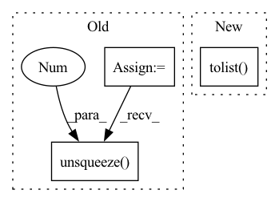

Pattern ID :36470
Before Change
async def query(query: Query) -> List[Dict[str, float]]:
text = [query.query.text] + [document.text for document in query.documents]
embeddings = encode(text)
// query_id = query.query.uid
query_embedding = embeddings[0].unsqueeze(0 ) .cpu().numpy()
document_ids = [int(doc.uid) for doc in query.documents]
document_embeddings = embeddings[1:].cpu().numpy()
After Change
// Only add items to the index if they do not already exist.
// See: https://github.com/facebookresearch/faiss/issues/859
// To do this, we first determine which of the incoming ids do not exist in the index
indexed_ids = set(faiss.vector_to_array(model.index.id_map).tolist() )
to_embed = [(id_, text) for id_, text in zip(ids, texts) if id_ not in indexed_ids]
// We then embed the corresponding text and update the index
if to_embed:In pattern: SUPERPATTERN
Frequency: 3
Non-data size: 3
Instances Fragment ID: 103100385
Project Name: pathwaycommons/semantic-search
Commit Name: b9f93d776ecb495fc68c9e7562f0b62701d88f00
Time: 2021-03-02
Author: johnmgiorgi@gmail.com
File Name: semantic_search/main.py
M Class Name: AnonimousClass
N Class Name: AnonimousClass
M Method Name: query(1)
N Method Name: query(1)
M Parent Class:
N Parent Class:
M File Name: semantic_search/main.py
N File Name: semantic_search/main.py
M Start Line: 88
M End Line: 105
N Start Line: 92
N End Line: 115
Before Change
// Image
t1 = time_sync()
im = cv2.cvtColor(cv2.imread(file), cv2.COLOR_BGR2RGB)
im = transforms(im).unsqueeze(0 ) .to(device)
im = im.half() if model.fp16 else im.float()
t2 = time_sync()
dt[0] += t2 - t1After Change
// Post-process
p = F.softmax(results, dim=1) // probabilities
i = p.argsort(1, descending=True)[:, :5].squeeze().tolist() // top 5 indices
dt[2] += time_sync() - t3
// if save:
// imshow_cls(im, f=save_dir / Path(path).name, verbose=True) Fragment ID: 103100384
Project Name: ultralytics/yolov5
Commit Name: 64e0757edffc6b2e927e16c8e2aa26439aceb4ce
Time: 2022-08-17
Author: ayush.chaurarsia@gmail.com
File Name: classify/predict.py
M Class Name: AnonimousClass
N Class Name: AnonimousClass
M Method Name: run(9)
N Method Name: run(10)
M Parent Class:
N Parent Class:
M File Name: classify/predict.py
N File Name: classify/predict.py
M Start Line: 38
M End Line: 82
N Start Line: 41
N End Line: 81
Before Change
other_idx = torch.where(condition1, other_idx, other_idx1) // (C, batch_size)
min_values, min_idx = torch.where(other_idx, values, values.max()).min(dim=-1)[0] // (C)
min_labels = labels.gather(dim=1, index=min_idx.unsqueeze(1)).flatten() // (C)
min_labels_counts = labels.eq(min_labels.unsqueeze(1 ) ).int().sum(dim=1) // (C)
condition2 = min_labels.ge(self.n_samples - 2) // todo: Not sure: self.n_samples -> self.seed_num
idx_list = condition2.nonzero()[:self.top_n_neurons]
neuron_dict[layer] = {int(idx): int(min_labels[idx]) for idx in idx_list}After Change
mode_idx = labels.eq(mode_labels) // (C, batch_size)
mode_labels_counts = mode_idx.sum(dim=-1) // (C)
condition2 = mode_labels_counts.ge(self.seed_num * 0.75)
idx_list = condition2.nonzero().flatten().tolist()
idx_list = sorted(idx_list, key=lambda idx: float(values[idx][mode_idx[idx]].min()))[:self.top_n_neurons]
neuron_dict[layer] = {int(idx): int(mode_labels[idx]) for idx in idx_list}
prints("{green}{layer:<20}: {reset}".format(layer=layer, **ansi), indent=4) Fragment ID: 103100378
Project Name: ain-soph/trojanzoo
Commit Name: 1684c28ef38502abb83d37beb845b69007e33274
Time: 2020-07-07
Author: ain-soph@live.com
File Name: trojanzoo/defense/backdoor/abs.py
M Class Name: ABS
N Class Name: ABS
M Method Name: find_min_max(3)
N Method Name: find_min_max(3)
M Parent Class: Defense_Backdoor
N Parent Class: Defense_Backdoor
M File Name: trojanzoo/defense/backdoor/abs.py
N File Name: trojanzoo/defense/backdoor/abs.py
M Start Line: 210
M End Line: 225
N Start Line: 234
N End Line: 254